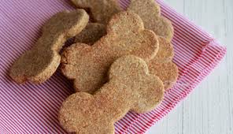
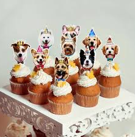
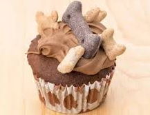
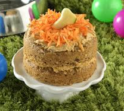
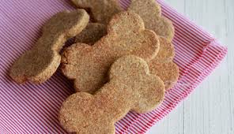
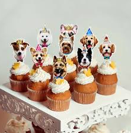
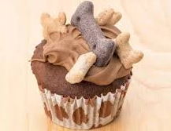
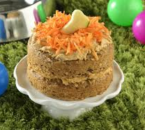

Pensando en la salud de los seres que más quieres, ha nacido Sanos y Peludos!
Desde pequeña he tenido mucha pasión por los animales y siento cierta conexión con ellos,
al punto de querer estudiar veterinaria. Por cosas del destino terminé por otros caminos
y no pude dedicarme a ellos.
Cuando estabamos en pandemia, tuve tiempo para reflexionar
y encontrar mi camino de vuelta. Por ello pude dedicar mi tiempo a capacitarme tanto en
pastelería como en salud canina y felina enfocada en la alimentación. Poco a poco he
adquirido mucha experiencia y con varios consejos de personas expertas en el tema, así
nace Sanos y Peludos.